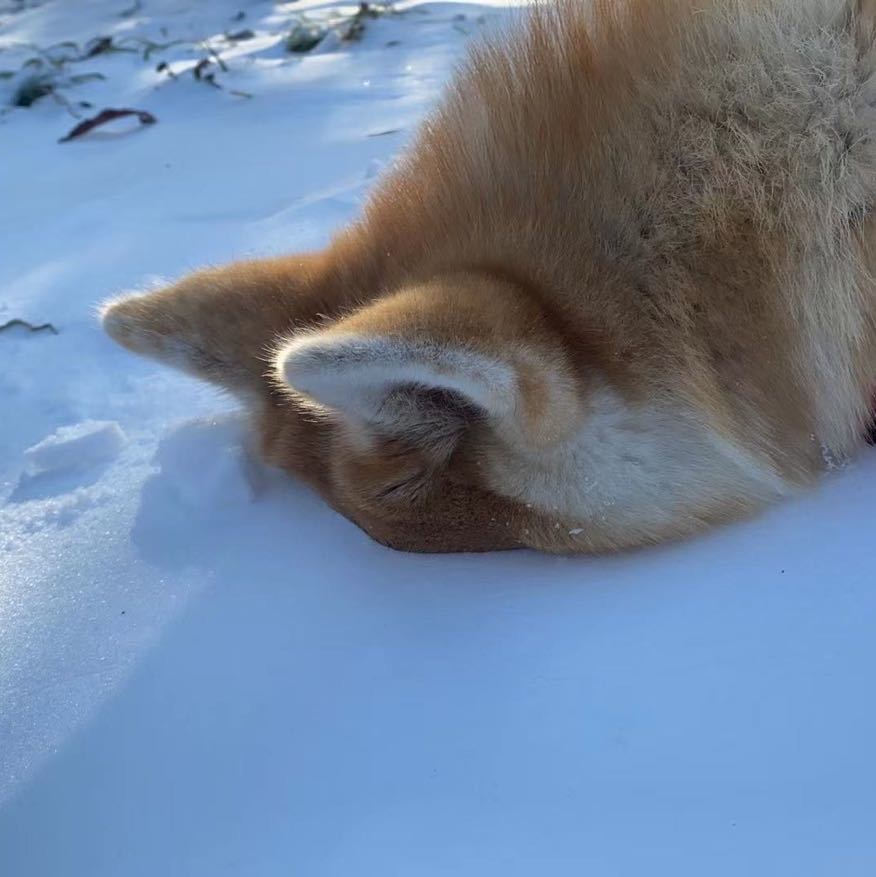
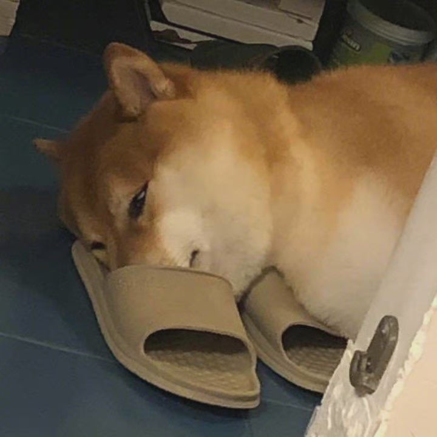

The longer a cat lives with a human, the more empathic it becomes to its owner, recognizing their voice. One study even compared house cats to cats in cafes and found that cats in cafes were better at recognizing their owners' voices.Cats can also remember their owners' little gestures and habits when they are in a certain mood, such as singing when happy, walking heavier when sad, and snapping their fingers when nervous.


ECHO
The picture above is the picture of my dog ECHO. This is the first time that she ever saw snow.
Cats like to joke with people, they are born lively and active, degree all around the curiosity is very strong, sometimes stay there staring at the master, can be enticed by the master, make a lot of interesting action. Cats also like to play with their owners, act in pettish, or hug their legs, or lick their hands. The cat sometimes to the interest can be in the side of their own play, such as: a small paper ball, a small bottle, a walnut, a carton, a small blue son will cause its interest point, shake to shake, jump up and down, playing happily. When it has the ability to catch mice, it is very serious and shrewd, it will not immediately eat, but with the mouth and claw all kinds of fun with mice, such as mice tired to move, just began a good meal.
The cat observation ability is strong, very sensitive to the mood of the shovel excrement officer, when the shovel excrement officer mood is good, it will be spoiled;
 Cats like to joke with people, they are born lively and active, degree all around the curiosity is very strong, sometimes stay there staring at the master, can be enticed by the master, make a lot of interesting action. Cats also like to play with their owners, act in pettish, or hug their legs, or lick their hands. The cat sometimes to the interest can be in the side of their own play, such as: a small paper ball, a small bottle, a walnut, a carton, a small blue son will cause its interest point, shake to shake, jump up and down, playing happily. When it has the ability to catch mice, it is very serious and shrewd, it will not immediately eat, but with the mouth and claw all kinds of fun with mice, such as mice tired to move, just began a good meal.
Cats like to joke with people, they are born lively and active, degree all around the curiosity is very strong, sometimes stay there staring at the master, can be enticed by the master, make a lot of interesting action. Cats also like to play with their owners, act in pettish, or hug their legs, or lick their hands. The cat sometimes to the interest can be in the side of their own play, such as: a small paper ball, a small bottle, a walnut, a carton, a small blue son will cause its interest point, shake to shake, jump up and down, playing happily. When it has the ability to catch mice, it is very serious and shrewd, it will not immediately eat, but with the mouth and claw all kinds of fun with mice, such as mice tired to move, just began a good meal.